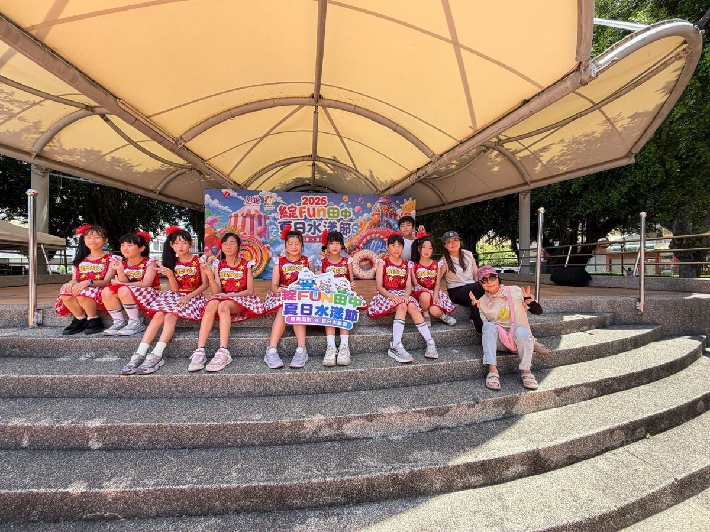
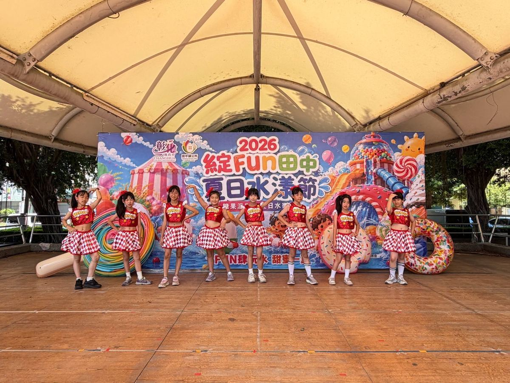
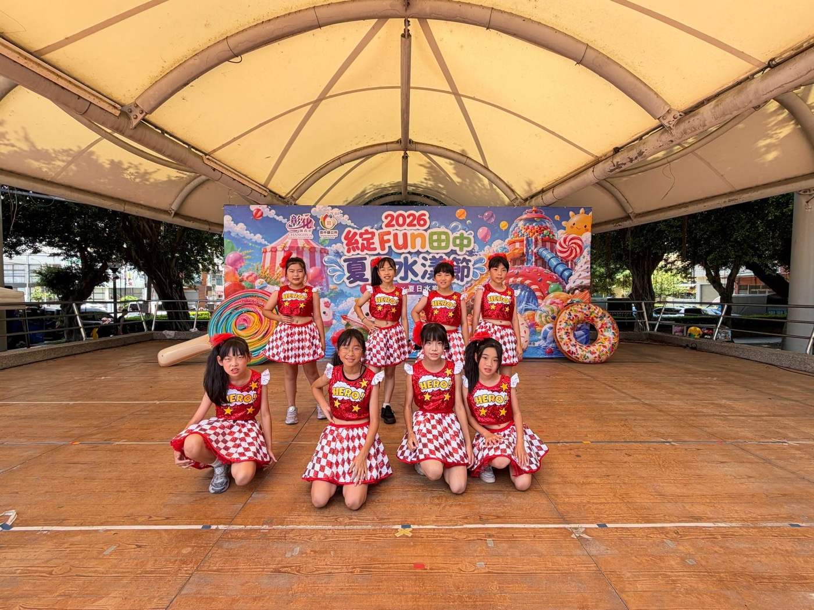

To give children a fun and memorable summer, Tianzhong Township Office organized a two-day Water Festival packed with exciting performances and activities. And in the heart of it all, eight young dancers from Hsinmin Elementary's dance club — Hsinmin Rising Stars — took the stage as invited guests! 🎉
These eight students have been training hard in the school's dance club, challenging themselves across all kinds of dance styles. When they first started, many of them were shy and nervous — afraid to look up at the audience. But step by step, through practice after practice and performance after performance, they found their confidence, discovered their self-worth, and learned to love the stage. Today, all that hard work finally burst into something brilliant. 🌟
They chose the powerful K-pop hit Golden — and they absolutely delivered. With sharp, synchronized moves and determined eyes, they sent a clear message to every single person watching:
A huge thank-you to all the parents who came to cheer the dancers on in person. Watching your children pour their hearts into every move — and seeing that confidence light up their faces — is something truly worth being proud of. 💛🥰
✨【新民 Rising Stars 閃耀水漾節！】✨
☀️ 為了讓孩子們擁有一個歡樂又充實的暑假，田中鎮公所精心規劃了為期兩天的「水漾節」精彩活動！💦✨ 而在這個熱鬧的舞台上，我們新民國小多元舞蹈社團——「新民 Rising Stars」的八位小小舞者也受邀擔任演出嘉賓啦！🎉👏
💖 從羞澀到自信，每一步都是成長——憑藉著對舞蹈的滿腔熱情，這群孩子在學校的多元舞蹈社團裡，積極接受各種不同舞蹈風格的磨練。💃🕺 從一開始的害羞膽怯、不敢直視觀眾，到如今在舞台上慢慢找到自我價值、建立起滿滿的自信心，背後的汗水與努力，在今天全化作了最精采的成果！🌟
🔥 炸翻全場！《Golden》黃金般的耀眼光芒——他們用充滿力量與感染力的韓國 K-pop 熱門神曲《Golden》炸翻全場！🎵⚡ 孩子們用整齊劃一的舞步與堅定的眼神，大聲地向現場所有人宣告：『我們將會在舞台上，像黃金一樣綻放最耀眼的光芒！』🪩✨
❤️ 謝謝今天到現場為孩子加油的所有家長，看到孩子們努力展現自我的模樣，相信家長們應該為孩子感到驕傲！❤️🥰
Words About Dance & Confidence英語學習角 · 和舞蹈與自信有關的小單字
Six key words from this story, each with an example sentence — then a five-question quiz. Tap 🔊 to listen.
六個關鍵字，每個字配一個例句，最後有五題小考。點 🔊 聽發音。
情境：兩位朋友聊到在水漾節看 Rising Stars 表演的事。